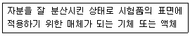
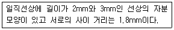

자기비파괴검사기능사 (2012-07-22 기출문제)
1과목: 자기탐상시험법
1. 비파괴시험을 할 때 가장 우선적으로 고려해야 할 사항은?
- 어떠한 시험방법을 택할 것인가
- 어떠한 시험조건을 이용할 것인가
- 시험을 통해 무엇을 알고자 하는가
- 제품의 불량률을 저하시킬 수 있는가
(정답률: 59%)

2. 가스흐름율의 단위인 clusec과 lusec의 관계가 올바른 것은?
- 1 clusec = 102 lusec
- 1 clusec = 10 lusec
- 1 clusec = 10-1 lusec
- 1 clusec = 10-2 lusec
(정답률: 59%)
3. 기포누설시험에 사용되는 발포액이 지녀야 하는 성질이 아닌 것은?
- 점도가 높을 것
- 적심성이 좋을 것
- 표면장력이 작을 것
- 시험품에 영향이 없을 것
(정답률: 59%)
4. 금속 내부 불연속을 검출하는데 적합한 비파괴검사법의 조합으로 옳은 것은?
- 와전류탐상시험, 누설시험
- 방사선투과시험, 누설시험
- 초음파탐상시험, 침투탐상시험
- 방사선투과시험, 초음파탐상시험
(정답률: 85%)
5. 다음 중 초음파탐상검사의 적용과 관계가 먼 것은?
- 용접부의 내부결함 검출
- 전기 전도율 측정
- 주조품 및 단조품의 내부결함 검출
- 압연제품에 대한 내부결함 검출
(정답률: 85%)
6. 다음 중 특정 매질의 음향임피던스(Z)를 구하는 식은?
- Z = 재질의 질량 × 음속
- Z = 재질의 질량 ÷ 음속
- Z = 재질의 밀도 × 음속
- Z = 재질의 밀도 ÷ 음속
(정답률: 60%)
7. 다른 비파괴검사법과 비교하였을 때 침투탐상시험의 단점에 해당되는 것은?
- 비금속의 표면에 사용할 수 없다.
- 기공이 많은 재료에 사용할 수 없다.
- 크기가 큰 제품에는 사용할 수 없다.
- 표면 결함 검출에 용이하다.
(정답률: 74%)
8. 각종 비파괴검사에 대한 설명 중 틀린 것은?
- 방사선투과시험은 기록의 보관이 용이하나 방사선 피폭 등의 위험이 있다.
- 초음파탐상시험은 대상물의 내부 결함을 검출할 수 있으나 숙련된 기술이 필요하다.
- 침투탐상시험은 표면 흠에 침투액을 침투시키는 방법이므로 흡수성인 재료는 탐상에 적합하지 않다.
- 와전류탐상시험은 맴돌이 전류를 이용하여 비전도체의 내부결함검출이 가능하다.
(정답률: 73%)
9. 다음 중 자분탐상검사를 적용하기에 적합한 시험체가 아닌 것은?
- 니켈(Ni)
- 코발트(Co)
- 구리(Cu)
- 철(Fe)
(정답률: 72%)
10. 중성자투과시험의 특징을 설명한 것 중 틀린 것은?
- 중성자는 필름을 직접 감광시킬 수 없다.
- 중성자투과시험에는 증강지를 사용하지 않는다.
- 중성자투과시험은 방사성물질도 촬영할 수 있다.
- 중성자는 철, 납 등 중금속에는 흡수가 작은 경향이 있다.
(정답률: 43%)
11. 내마모성이 요구되는 부품의 표면 경화층 깊이나 피막두께를 측정하는데 쓰이는 비파괴검사법은?
- 초음파탐상검사(UT)
- 방사선투과검사(RT)
- 와전류탐상검사(ECT)
- 음향방출검사(AE)
(정답률: 74%)
12. 자기탐상검사에 사용되는 용어에 대한 그 단위가 틀린 것은?
- 자속밀도 : Wb/m
- 투자율 : H/m
- 자계의 세기 : A/m
- 자속 : 맥스웰(Mx)
(정답률: 34%)
13. 방사선투과시험에 이용되고 있는 선원이 아닌 것은?
- Co-60
- Cs-137
- Ir-192
- Cf-252
(정답률: 66%)
14. 후유화성 침투탐상시험법으로 피검체의 결함을 탐상할 때 어느 것을 가장 잘 준수해야 하는가?
- 침투시간
- 유화시간
- 건조시간
- 현상시간
(정답률: 84%)
15. 자분탐상시험시 표면의 미세한 결함을 탐지하는데 가장 적합한 전류는?
- 직류
- 반파직류
- 교류
- 반파교류
(정답률: 64%)
16. 다음 자화방법 중 선형자화 방법으로 맞는 것은?
- 축통전법
- 전류관통법
- 극간법
- 프로드법
(정답률: 69%)
17. 자분탐상시험에서 자분이 갖추어야 할 특성이 아닌 것은?
- 높은 투자성을 가질 것
- 낮은 보자성을 가질 것
- 유동성과 분산성이 높을 것
- 교류전류에서 표피효과가 클 것
(정답률: 49%)
18. 여러 개의 소형부품에 자분탐상시험 후 탈자가 요구될 때, 어떻게 하는 것이 가장 이상적인가?
- 하나씩 탈자한다.
- 2~3개씩 나누어 탈자한다.
- 부품 모두를 한번에 탈자한다.
- 조립품 모두를 조립 후 탈자시킨다.
(정답률: 62%)
19. 자분지시모양의 기록방법 중에서 정확도와 신뢰성이 가장 좋은 것은?
- 전사
- 스케치
- 사진촬영
- 셀로판 테이프에 부착
(정답률: 81%)
20. 말굽자석 접촉면을 서로 맞대어 용접했을 때 일어나는 현상으로 맞는 것은?
- 변함이 없다.
- 자성을 잃게 된다.
- 자력이 더욱 강하게 된다.
- 용접부 주변에 새로운 극이 형성된다.
(정답률: 56%)
2과목: 자기탐상관련규격
21. 다음 자외선 조사장치에 대한 설명으로 잘못된 것은?
- 필터는 장시간 점등 시에는 자외선 투과율이 저하된다.
- 고압 수은등은 사용 중에 전원을 끄게 되면, 다시 점등하는데 5~6분 걸린다.
- 고압 수은등은 아주 광범위한 파장의 빛을 방사한다.
- 고압 수은등과 같은 방전등은 점등되면 전류를 무제한으로 흘리고자 하는 성질이 있어 안정기가 필요하다.
(정답률: 45%)
22. 연속 습식법으로 검사할 경우 다음 중 자분모양(결함) 관찰 시기는?
- 자분적용이 끝난 직후에
- 자분적용을 시작함과 동시에
- 자분적용이 끝난 다음 5분 후에
- 자분적용이 끝난 다음 30분 이내에
(정답률: 51%)
23. 자분탐상시험시 잔류자기에 대하여 전류 종류와의 관계를 바르게 설명한 것은?
- 직류전류로 서서히 감소시켜 잔류자기를 소멸시킨다.
- 직류전류로 갑자기 감소시켜 잔류자기를 소멸시킨다.
- 교류전류로 서서히 감소시켜 잔류자기를 소멸시킨다.
- 교류전류로 빠르게 감소시켜 잔류자기를 소멸시킨다.
(정답률: 65%)
24. 자분탐상시험시 자화력이 계속 증가해도 물질 내의 자기가 더이상 증가되지 않는 점을 무엇이라고 하는가?
- 침묵점
- 보자력점
- 전류 자기점
- 포화점
(정답률: 80%)
25. 자분탐상시험의 검사공정에 관한 내용으로 틀린 것은?
- 전처리 : 검사 절차서에서 요구되지 않는다면 용접 덧붙임을 제거하지 않아도 됨
- 자화 : 결함의 길이방향에 직각으로 자장을 걸어 주어야 함
- 자분액 적용 : 자분의 휘도와 농도 점검을 해야 함
- 탈자 : 다음 공정이 세척이 아니라면 반드시 탈자를 해야 함
(정답률: 63%)
26. 자분탐상시험 중 발생될 수 있는 재해로부터의 안전재해 예방법으로 틀린 것은?
- 휘발성 용제 등에 자분을 현탁시킨 검사액을 사용할 경우에는 부근에 화기가 없는지 등의 예방조치를 하여야 한다.
- 인화성 가스가 있는 장소에서는 아크 발생 등의 우려를 예방하기 위하여 검사를 수행해서는 안된다.
- 독성이 없는 건식자분이 환경에 노출될 경우 장시간이라도 특별히 방진마스크를 사용할 필요는 없다.
- 전처리 등에 사용한 기름이 묻은 물건들은 화재 예방을 위해서 적당한 용기에 처리해 두어야 한다.
(정답률: 87%)
27. 강 후판의 단면에 발생한 결함을 검출하는 경우 프로드법을 사용하며, 전류는 직류 또는 단상 반파정류로 건식자분을 쓴다. 이 때 적절한 방법은?
- 수세법
- 투과법
- 연속법
- 잔류법
(정답률: 51%)
28. 철강재료의 자분탐상 시험방법 및 자분모양의 분류(KS D 0213)에서 A형 표준시험편에 대한 설명 중 옳은 것은?
- A2 시편은 A1 시편보다 낮은 유효자계의 강도에서 지시를 얻을 수 있다.
- A2 시편은 A1 시편보다 높은 유효자계의 강도에서 지시를 얻을 수 있다.
- A2 나 A1은 뚜렷한 사용목적을 구별하고 있지 않기 때문에 아무 것이나 선택하여 사용해도 무방하다.
- 시험편의 명칭을 정함에는 사용전류, 전기특성, 검출결함의 종류, 크기에 따라서 정한다.
(정답률: 66%)
29. 철강재료의 자분탐상 시험방법 및 자분모양의 분류(KS D 0213)에 따른 자분의 자성 측정방법에 해당되지 않는 것은?
- 자기천칭을 사용하는 방법
- 자기히스테리곡선을 구하는 방법
- 솔레노이드 코일을 사용하는 방법
- 자기력선의 수를 측정하는 방법
(정답률: 39%)
30. 압력 용기-비파괴 시험 일반(KS B 6752)에 전류계가 부착된 자화장치의 기계값과 실제의 전류값과의 허용 오차는?
- ±5% 이내
- ±10% 이내
- ±15% 이내
- ±20% 이내
(정답률: 40%)
31. 압력 용기-비파괴 시험 일반(KS B 6752)에서 반드시 탈자하여야 하는 경우는?
- 잔류자장이 후속공정에 방해될 때
- 시험 후 열처리공정이 있을 때
- 모든 시험 후
- 시험 후 도장공정이 있을 때
(정답률: 71%)
32. 철강재료의 자분탐상 시험방법 및 자분모양의 분류(KS D 0213)에서 선상의 자분모양이란 자분모양의 길이가 나비의 몇 배 이상인 것을 말하는가?
- 1배
- 2배
- 3배
- 4배
(정답률: 88%)
33. 철강재료의 자분탐상 시험방법 및 자분모양의 분류(KS D 0213)에서 연속법으로 퀀칭한 기계부품을 자분탐상시험 할 경우 자계의 강도(A/m)는 어떻게 규정하고 있는가?
- 12000 이상
- 5600 이상
- 2400~3600
- 1200~2000
(정답률: 61%)
34. 압력 용기-비파괴 시험 일반(KS B 6752)에서 시험감도를 보증하기 위한 시험체 표면에서의 백색과의 최소강도는?
- 500 lx
- 1000 lx
- 1500 lx
- 2000 lx
(정답률: 55%)
35. 철강재료의 자분탐상 시험방법 및 자분모양의 분류(KS D 0213)에서 형광자분 사용시 자외선조사장치의 자외선 강도에 대한 내용으로 옳은 것은?
- 필터면에서 38cm 떨어진 위치에서 800μW/cm2 이상 이어야 한다.
- 필터면에서 38cm 떨어진 위치에서 500μW/cm2 이상 이어야 한다.
- 필터면에서 25cm 떨어진 위치에서 800μW/cm2 이상 이어야 한다.
- 필터면에서 25cm 떨어진 위치에서 500μW/cm2 이상 이어야 한다.
(정답률: 85%)
36. 철강재료의 자분탐상 시험방법 및 자분모양의 분류(KS D 0213)에서 탐상시험시 사용되는 자외선 조사장치의 점검 주기로 올바른 것은?
- 적어도 년 2회
- 적어도 년 1회
- 적어도 월 2회
- 적어도 월 1회
(정답률: 75%)
37. 철강재료의 자분탐상 시험방법 및 자분모양의 분류(KS D 0213)에 따른 시험방법 설명으로 옳은 것은?
- 작업조건을 고려하여 정하지만 일반적으로 큰 부품의 경우 습식법이 작업하기 쉽다.
- 작업조건을 고려하여 정하지만 일반적으로 형광자분이 관찰하기 쉽고 정밀도가 좋다.
- 작업조건을 고려하여 정하지만 일반적으로 작은 부품의 경우 건식법이 작업하기 쉽다.
- 작업조건을 고려하여 정하지만 일반적으로 비형광자분이 관찰하기 어렵지만 정밀도가 좋다.
(정답률: 78%)
38. 철강재료의 자분탐상 시험방법 및 자분모양의 분류(KS D 0213)에 따른 용어의 정의 중 다음 문장이 뜻하는 것은?

- 용매
- 계면활성제
- 분산매
- 점착성 유제
(정답률: 64%)
39. 철강재료의 자분탐상 시험방법 및 자분모양의 분류(KS D 0213)에서 자분모양이 다음과 같을 때 지시 길이는 어떻게 판정하는가?

- 2mm와 3mm 각각 2개의 지시길이로 판정한다.
- 3.8mm와 3mm 각각 2개의 지시길이로 판정한다.
- 연속한 1개의 지시로 간주되며 그 길이는 5mm이다.
- 연속한 1개의 지시로 간주되며 그 길이는 6.8mm이다.
(정답률: 81%)
40. 철강재료의 자분탐상 시험방법 및 자분모양의 분류(KS D 0213)에서 시험결과에 대한 기록 시 시험체에 대한 기재사항으로 틀린 것은?
- 시험체의 품명
- 시험체의 치수
- 열처리의 상태
- 시험체의 재질
(정답률: 31%)
3과목: 금속재료일반 및 용접일반
41. 압력 용기-비파괴 시험 일반(KS B 6752)에 다른 원형코일자화법에서 자장의 적정성 측정이 부적절한 자장지시계는?
- 파이(pie)형 자장지시계
- 홀효과 프로브 가우스미터
- B형 인공결함 심
- R형 인공결함 심
(정답률: 38%)
42. 철강재료의 자분탐상 시험방법 및 자분모양의 분류(KS D 0213)에서 연속법 적용시 원칙적으로 적용하는 “통전시간”에 대한 설명으로 옳은 것은?
- 통전 중에 자분의 적용을 시작할 수 있는 정도의 시간이다.
- 통전 중에 자분의 적용을 완료할 수 있는 정도의 시간이다.
- 원칙적으로는 1/4~1초로 한다.
- 1/120초 이상으로 하여 3회 이상 통전을 반복한 시간이다.
(정답률: 36%)
43. 마텐자이트 조직이 경도가 큰 이유로 틀린 것은?
- 금속의 기지조직이 조대화 되기 때문
- 금속의 결정립이 미세화 되기 때문
- 급랭으로 인한 내부 응력의 증가 때문
- 탄소 원자에 의한 Fe 격자의 강화 때문
(정답률: 26%)
44. Al-Si계 합금을 개량처리하기 위해 사용되는 접종처리제가 아닌 것은?
- 금속나트륨
- 불화알칼리
- 가성소다
- 염화나트륨
(정답률: 46%)
45. 흰색의 인성이 있는 금속으로 내식성이 강하고 열전도도 및 전연성이 좋으며, 비중이 약 8.9인 금속은?
- Ni
- Mg
- Al
- Fe
(정답률: 54%)
46. 다음의 강 중 탄소함유량이 가장 높은 강재는?
- STS11
- SM45C
- SKH51
- SNC415
(정답률: 53%)
47. 스프링강에 요구되는 성질에 대한 설명 중 옳은 것은?
- 탄성한도 및 항복점이 커야 한다.
- 내산성 및 취성이 커야 한다.
- 산화성 및 취성이 커야 한다.
- 산화성 및 인성이 커야 한다.
(정답률: 80%)
48. Al에 Ni, Mg, Cu 등을 첨가한 주조용 알루미늄 합금으로 내연기관의 피스톤, 공랭 실린더 헤드 등에 널리 사용되는 합금의 명칭은?
- 실루민(Silumin)
- 와이(Y) 합금
- 문쯔메탈(Muntz metal)
- 하이드로날륨(Hydronalium)
(정답률: 75%)
49. 탄소강의 그라인더 불꽃시험에서 일반적으로 탄소량의 증가에 따라 불꽃의 파열은 어떻게 변하는가?
- 항상 일정하다.
- 점차 적어진다.
- 점차 많아진다.
- 점차 많아지다 적어진다.
(정답률: 71%)
50. 철 속에 포함되어 철을 여리게 하고, 산이나 알칼리를 약하게 하며, 백점이나 헤어크랙의 원인이 되게 하는 성분은?
- S
- N2
- H2
- O2
(정답률: 57%)
51. 화염경화법의 특징을 설명한 것 중 옳은 것은?
- 설비비가 많이 든다.
- 담금질 변형을 일으키는 경우가 적다.
- 부품의 크기나 형상에 제한이 많다.
- 국부 담금질이나 담금질 깊이의 조절이 어렵다.
(정답률: 31%)
52. 다이캐스팅용 알루미늄 합금의 구비조건이 아닌 것은?
- 유동성이 좋을 것
- 열간 메짐성이 클 것
- 금형에 점착되지 않을 것
- 응고 수축에 대한 용탕 보급성이 좋을 것
(정답률: 69%)
53. 시멘타이트의 금속간화합물에서 탄소의 원자비는 몇 %인가?
- 25%
- 55%
- 75%
- 95%
(정답률: 46%)
54. 재료가 어떤 응력하에서 파단에 이를 때까지 수백 % 이상의 매우 큰 연신율을 나타내는 현상은?
- 초전도
- 비정질
- 초소성
- 형상기억
(정답률: 55%)
55. 면심입방격자에 대한 설명으로 옳은 것은?
- 원자수는 2개이다.
- 충진율은 약 68%이다.
- 면심입방격자의 기호는 FCC이다.
- 전면성이 작기 때문에 가공성이 나쁘다.
(정답률: 67%)
56. 6-4황동에 Sn을 1% 첨가한 것으로 판, 봉으로 가공되어 용접봉, 밸브대 등에 사용되는 것은?
- 톰백
- 니켈 황동
- 네이벌 황동
- 애드미럴티 황동
(정답률: 59%)
57. 열전도율이 낮은 적색을 띤 회백색의 금속으로 용융상태에서 응고할 때 팽창하는 것은?
- Sn
- Zn
- Mo
- Bi
(정답률: 40%)
58. 다음 중 서브머지드 아크 용접에서 전류가 과대할 때 나타나는 현상이 아닌 것은?
- 용입이 깊어진다.
- 슬래그의 혼입이 발생한다.
- 볼록한 비드가 발생한다.
- 이면 비드의 언더컷이 발생한다.
(정답률: 47%)
59. 정격 2차전류가 200A, 정격 사용율이 40%의 아크용접기로 150A의 전류를 사용하여 용접하는 경우 허용사용율은 얼마인가?
- 61%
- 68%
- 71%
- 78%
(정답률: 70%)
60. 다음 중 아세틸렌가스의 화학식으로 옳은 것은?
- CH4
- C2H2
- C2H4
- C3H8
(정답률: 49%)